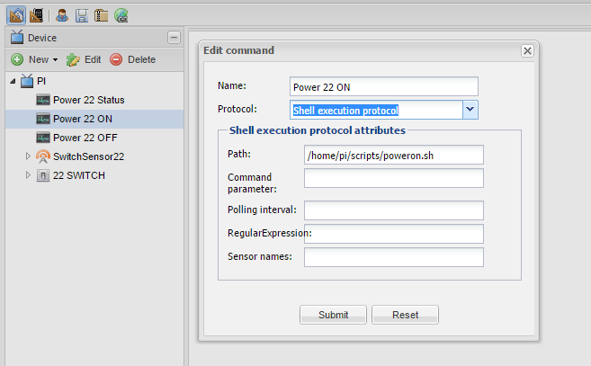
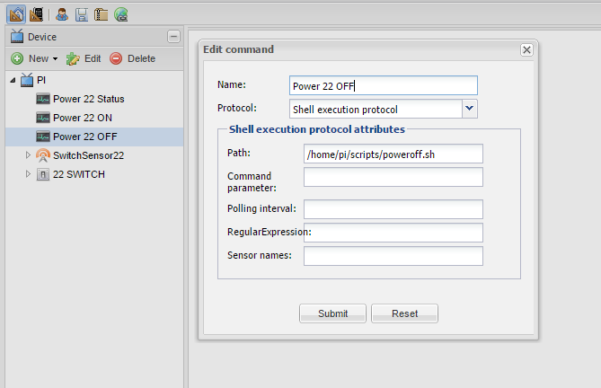
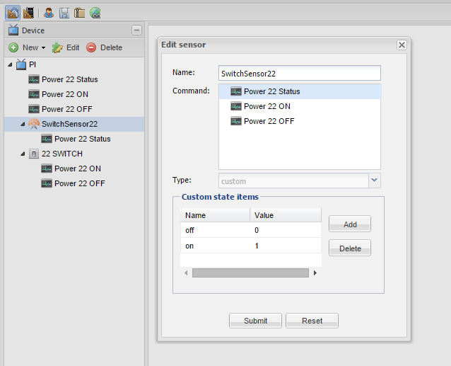
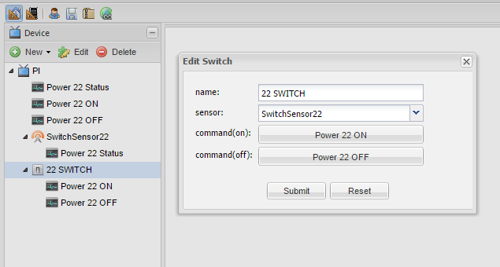

Hello all here.
I have made this RPI-HomeBox, which contains 4 relays for main power, IR-blaster, and IR reciver.
While it all works, i have tried to make a switch for switching some of the relays on|off
I have made a lot of different shell scripts, for testing, but need a switch with on|off state now!
I would really like an example of a shell (.sh) script, which returns a value, which is usefull for a sensor.
Does anybody have the possibility to paste such a script here ?
Rgds; Jesper
Cannot resolve external resource into attachment.
Cannot resolve external resource into attachment.
{kind=link}
{kind=link}
{kind=link}
{kind=link}
{kind=link}
{kind=link}
{kind=link}
{kind=link}
|
Soo No matter what i do, i cannot make it work. I got the sensor, i got the switch, and i got commands for turn on, and turn off... and ofcause the sensor status command. I tried every possible exit's from my shell scripts, therefore i got both echo "on", exit 1 etc... I think i can make it work, if i just know how the exit of my script must look like? Anybody got some working scripts (#!/bin/sh) ?? Rgds; Jesper. ---------------------------------------- #!/bin/sh
---------------------------------------- #!/bin/sh
---------------------------------------- #!/bin/sh
if [ $status = 1 ]; then fi ------------------------------------------- Cannot resolve external resource into attachment. Cannot resolve external resource into attachment. |
|
Hi Jesper I managed to work with the GPIO's through the Webiopi. Check the link below. http://www.openremote.org/pages/viewpage.action?pageId=23593362 Hope this helps. |
You should always reboot the controller (stop/start) after amending and uploading a new design with shell command protocol. There is a bug in the implementation that it work properly only from the cool boot. echo "on", echo "1" should be OK. |
|
Hi Thanks. I will check it out... Anyway, thanks for answer! Rgds; Jesper. |
|
Hi. Thanks for confirming that echo "on" and/or echo "1" gives the right return from shell (!#/bin/sh). #!/bin/sh #!/bin/sh #!/bin/sh
Can anybody see, whats wrong, or has anybody ever made a switch/sensor/shellexe combi WORK ??? I allways, reboot my PI with the controller, when i make changes (Read this somewhere else)Thanks. Rgds; Jesper. |
|
Yes, you must to install WEBIOPI in the RPI, after checking the installation according to the installation instructions in this LINK you can porceder to perform the configuration on the OpenRemote designer. ( Look at the Troubleshooting in the LINK I send you above ) After the completion of the configuration you must reboot the system (controller / RaspberryPi) as indicated by Michal. |
|
Cool So i will try to install it later. I allready got openremote controller installed on the PI, but does not look to be a problem, having more services running according to CPU-load. Rgds; Jesper. |
I've made lot of them, even implementing whole new protocols through shellexe. Now, look at the output of log file logs/shellexe.log, maybe you will find some clues there. At least you should see your script being executed and returning some value. |
|
Okay... Will report back later! Thanks Rgds; Jesper. |
|
Hi again here So i have been studying my shell log, and pasted some of the outputs here. But i can't see why, it says "regex evaluation did not find a match" ?? Rgds; Jesper. #!/bin/sh #!/bin/sh #!/bin/sh – SNIP – Cannot resolve external resource into attachment. Cannot resolve external resource into attachment. |
If I understand correctly, the values that the scripts return to your status sensor are either "1" or "0". Yet in your sensor you apply RegEx on|off. That does not make sense to me. Have you tried leaving RegEx empty? |
|
PZ1, Thanks that did it. Removing the on|off in regex did the trick. I am currious now, how this works. - So will test when i am back home from work today I created both a custom, and a switch sensor. The shell return 1 / 0 OR the on / off, works flawlessly now. Maybe i have to give echo "Sensorname on" for regex to work ? Rgds; Jesper |
|
Hi Jesper, Thanks for this post and to keep posting until resolution. I very new at this and i have a similar setup that i can get to make it work. Since you already make your works, maybe you or someone else can shed some light on whats wrong. Currently i only have one simple LED connected to the GPIO22 of my Raspberry Pi that i want to turn on and off. For testing learning purposes i want to start with something really basic and then move on. Ok, so this are the scripts i have, similiar as yours. poweron.sh poweroff.sh powerstatus.sh This are the screenshots of the configuration of each of the items i have     On the panel view i just have a single switch When get on my phone to the controller and press the button (which is labeled by "off") the led turns on and thats it. it will stay like that no matter how many times i press the button. Anyone has any advise? |
|
EDIT: I think the problem was the interval polling time i had on the status command. Will confirm later Confirmed. Added the polling interval as 3s on the status and its working now. |